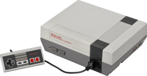
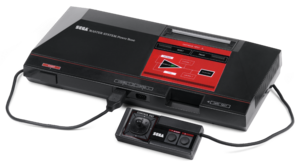
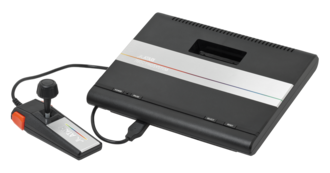

The era of 8-bit consoles is the third generation of gaming systems and the first since the crisis of the gaming industry in 1983, also the transition from block graphics to sprite, which was a key leap in game design. Some predecessor consoles also used 8-bit processors, but home game consoles began to be designated bit by bit starting with the third generation. This name began to be used with the advent of 16-bit game consoles, which denoted their main difference from the previous generation. By the end of the 3rd generation, 8-bit video game consoles were outdated in both graphics and processing power, compared to 16-bit consoles. The most popular third-generation systems are the Nintendo Entertainment System, Sega Master System, and Atari 7800.
| Name | NES | Master System | Atari 7800 |
|---|---|---|---|
| Maintainer | Nintendo | Sega | Atari |
| Console |  |  |  |
| Release Date |
|
|
|
| Games |
|
|
|